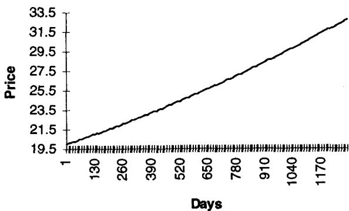
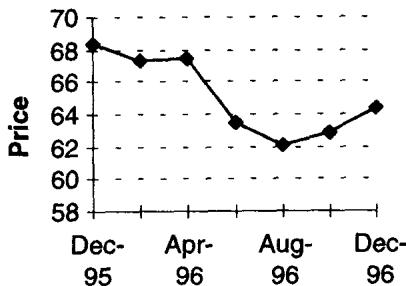

第12章：可替代性、收敛与堆叠（Fungibility, Convergence, and Stacking）
Find me an arbitrage in commodities and I will show you a squeeze. —— An option proverb
导读：本章要解决的问题
前面几章把希腊字母和它们的动态行为讲透了，默认的前提一直是：标的有一个干净、可套利、风险中性的远期市场，交易员可以在上面自由复制。本章处理的，正是这个前提崩坏时会发生什么。Taleb 把问题拆成三个彼此咬合的概念：可替代性（fungibility）决定一个标的能不能被风险中性地复制；收敛（convergence）决定期限结构里那条向上或向下的曲线该被读成"无偏预测"还是"风险溢价/挤压的产物"；堆叠（stacking）则是当多腿对冲来不及逐一执行时，如何借少数流动工具临时把风险压下去。
把全章压缩成几条主线：
- 可替代性是"风险中性复制可行性"的交易语言。一个能电子化创造、随处交割的标的（货币）接近完美可复制；一个必须在特定时间、特定地点交割活体的标的（活牛）几乎无法复制。可替代性越低，套利越只能单向进行，期限结构就越不受无套利约束。
- cash-and-carry 给出远期价格的上边界（最大 contango），但只有可两向套利的标的才同时拥有下边界。可储存性、carry、交割地点把一个看似统一的商品撕成多个价格。
- 收敛交易的本质是赌期限结构是一个有偏的预测量。一阶、二阶、蝶式收敛对应于对曲线的水平、斜率、曲率做逐级免疫，这正是固定收益里的因子免疫与主成分分解。
- carry 不等于 convergence；convergence = carry + 沿曲线的滚动（roll-down）。很多"正 carry"头寸其实是伪装的空波动率，Sharpe 比率在有偏、有肥尾时会骗人。
- stacking 是围绕流动性的临时机动，不是永久对冲。把敞口长期堆在某一个合约上，是 Metallgesellschaft 式灾难的配方。最小方差 stacking 用相关性矩阵把多腿压缩到几笔交易，本质是最小方差对冲（协方差投影）。
笔记沿原文 FUNGIBILITY → CONVERGENCE → STACKING 三大块的小节顺序展开，并在每个节点把 Taleb 的交易法则翻译回我们熟悉的定价命题。
一、可替代性：复制可行性的另一种说法
Taleb 给可替代性下的定义很朴素：它度量"满足交割义务所需的具体程度"（the degree of specificity required for the satisfaction of the deliverability obligation）。高度可替代的商品是抽象的，可以像互换那样被电子化地创造出来；不可替代的商品是具体的，无法随意制造，比如要求在特定地点、特定时间交割一头牛。
他随即点出这个概念的理论身份：
从金融理论的视角看，可替代性反映的是一个衍生品被风险中性复制（risk-neutral replication）的可行性。
这句话值得停下来想清楚。我们做定价时默认市场是完备的（complete market）：任何或有支付都能用标的与无风险资产的动态组合复制出来，于是存在唯一的等价鞅测度，价格等于风险中性期望的贴现。可替代性低，恰恰意味着这套机器的前提被破坏。一头牛无法被"做空再借入"，无法被"提前若干月创造出来交割"，所以围绕它的远期既不能被 cash-and-carry 钉住上沿、也不能被反向套利钉住下沿。市场不完备，复制基底缺失，定价就退回到带风险溢价的期望，而非无套利复制值。Taleb 说这正是理论家"无法得到一个统一的衍生品定价模型"的根源：产品之间的差异有时深到模型层面，有的标的纯粹是理论构造（通胀指数），有的则可触可感、且高度特定。
一条直接的市场推论：
同一类别里若有两个工具，可替代性更高的那个，市场会大得多、流动性也好得多。
债券期货往往比现券更有看头，因为操作者不必受制于某一只特定券的可借性（尽管期货里嵌着转换期权 conversion optionality）；同理，互换比债券更好套利。可替代性高的工具吸引流动性集中，这与第 1 章"市场总是流向简单"的简单性规则是同一股力量的两个侧面：标准化、可创造、无地点时间约束，三者一起把流动性吸过去。
Taleb 用一个挤空（squeeze）的例子说明低可替代性的后果。某合约规定交割某种细分品种的小牛，于是它被那个特定规格的供需所绑架。有时未平仓合约数（open interest）超过了该规格存活动物的总数，多空失衡。手握现货的人通常是经验老到的逼空老手，他们囤积实物、逼空头交割；在狭窄的交割时间窗里，无论手上有多少钱都不可能凭空造出动物来。逼空会一直持续，直到未平仓量跌回实物上限。这正是开篇那句期权谚语的注脚：商品里所谓的套利机会，背后常常站着一场逼空。
二、可替代性的排序：从电子货币到活牛
Taleb 把商品放在一条从"完全可替代"到"交割高度特定"的连续谱上。
谱的一端是货币。银行能用电子方式创造货币并即时电汇到世界任何角落，唯一的约束是外汇管制（exchange control），而工业化国家的货币早已基本没有这种障碍。能够无限制地瞬时电汇，等于把货币从时间和地点的约束里解放出来。Taleb 强调这"对价格的期限结构有决定性的影响"：因为可两向套利，远期被覆盖利率平价牢牢钉住。
谱的另一端是必须在特定地点交割的实物商品。地点的特定性使套利受制于运输。于是同一品级的同一商品，会因为运费和运输时间，在同一时刻、不同地点以不同价格成交。Taleb 给的数字是：纽约港 3 天交割的现货油 18.23，鹿特丹同一交割日的同品级 18.75。在交割期限内以可接受的价格搬运库存做不到，于是两地之间被允许存在一段价差。当然，价格够诱人时，总会有人包一架协和飞机把货运到任何地方，套利边界由运输的边际成本划定。
不可替代性还让不同品级以不同价格成交，而时间和地点的限制不止一种作用方式。储存成本本身可以高到让"把产品留在地下"的人来决定该商品的边际 carry。Taleb 的油田例子很能说明问题：地下的油其实不让所有者承担直接的物理持有成本；若所有者是一个无权出售国土的政府，通常根本不考虑任何财务 carry；一个没有盯市（marks-to-market）压力的人，也没有真实的融资成本要算。结果就是没有任何真实力量去托住远期价格（除了真实用户为锁定未来需求而买入长期远期，但出于交易目的这点力量可忽略）。于是远期可以比现货低得多，现货与远期之差能剧烈波动，却没有交易员有胆量去对抗这个市场。换句话说，缺了一侧的套利约束，价差就失去了被钉住的锚。
最后是易腐品和活体。没有任何金融力量能电子化地创造出一头活的动物（在现有基因工程水平下还不行），也无法把它的寿命延长到足以做长期远期交割。这类标的在时间线上根本不可套利。
理论映射：持有成本模型与单向套利
把这条谱翻译成公式很直接。对可储存、可两向套利的标的，无套利远期是
其中 是融资利率， 是仓储与保险等持有成本率， 是便利收益（convenience yield）。货币是 、 退化为外币利率的特例，得到覆盖利率平价 ，等式两侧都能套利，远期被精确钉死。
对只能单向套利的实物商品，约束退化成不等式。仓储套利只能压住上沿：若远期太贵，买现货、付 carry、卖远期即可锁定利润，于是 。但没有人能"做空地下的油再借现货回补"，下沿无法用复制钉住，远期可以远低于这个上界，由真实供需和便利收益自由决定。可替代性的高低，数学上就是"远期受双边等式约束"还是"只受单边不等式约束"的区别。
三、价格期限结构与 cash-and-carry：最大 contango
Taleb 在这里给出一条针对低可替代性标的的风险管理规则：
在可替代性较低的商品上，对现货资产期权的 calendar spread（日历价差）必须拆解成各个组成部分分别分析。
理由就是上一节的不等式约束：不同到期之间不存在干净的无套利换算，calendar spread 里混着 carry、储存、便利收益和真实供需，把它当成一个齐整的"时间价差"会出错。
价格沿什么曲线走？若一年后的商品相对现货太贵，套利者可以买现货、算清楚 carry（融资加物理储存），再卖出期货锁定利润。这给期货成本设了一个上边界，前提是商品不随时间劣化。这个上边界叫最大 contango（maximum contango）。

图 12.1 给出这个边界。Taleb 的算例：某商品现货 20.00，年化储存（含保险）成本固定 8%。最大 contango 线会贴合"利率收益率曲线加储存成本"的形状。商品价格不可能越过这条线，但收益率曲线在线下可以是任意形状。换句话说，上边界由可储存套利给定，曲线在边界之下的具体走法则由市场自由决定，这再次是单边约束的图形版。
据此可把商品分成三类：
- 只能在时间线上单向套利的，比如多数实物商品。
- 可以双向套利的，比如货币、流动股票和固定收益工具。
- 在时间线上完全不可套利的，比如所有易腐品。
Taleb 用表 12.1 按可替代性给商品分类，并同时给出波动率期限结构的稳定性，这一列在后面讲期权套利时会再用到。
| 商品 | 可替代性 | 波动率期限结构的稳定性 |
|---|---|---|
| 货币、黄金 | 无外汇管制时为高 | 高 |
| 现券（美国、德国） | 中等，"tight"（回购市场难借）的券除外 | 中等 |
| Euro 系（Eurodollar、Euromark 等） | 无，因为各合约期限互不重叠 | 近月低，远月较高 |
| 股票 | 多数流动美股为高；日本、德国为低 | 高，即便借券不稳定 |
| 农产品 | 远月贴水或高度易腐时不可能；cash-and-carry 情形下低 | 无 |
值得注意 Eurodollar 这一行：它的可替代性被标为"无"，因为各期合约覆盖的是互不重叠的时间段（一份合约对应一个特定的三个月存款期）。这一点后面 stacking 一节会反复用到，正是它解释了为什么近月 Eurodollar 与其他合约相关性偏低、必须被当作半独立的产品处理。
四、可替代性与期权套利
Taleb 给期权套利下了一个精确的定义：它本质上是在合成地把一个工具的流动性挪去对冲另一个工具，也就是在产品的流动性之间做交易。一个可替代的产品服从
远期的多数希腊字母与现货的希腊字母可替代，至多差一个方差项。初阶的希腊字母（delta、gamma）可以在现货和期货之间互换使用。这给了套利者底气：现货端做的 delta，可以用期货端来平。
判断能否 spread 一条波动率曲线，要看产品之间的相关性结构。高相关性矩阵导出一条可 spread 的波动率曲线（各到期可以连成一片来对冲）；低相关性矩阵则要求把各到期 bucketing（分桶）成半独立的产品分别处理。这正好呼应表 12.1 里那一列"波动率期限结构稳定性"。
接着是一条对实务排序极有指导意义的观察：
二阶导数的稳定性高于一阶导数，越往高阶越稳定。
含义是：如果 9 个月的 delta 没能很好地对冲 3 个月的 delta，那么它们的 gamma 对冲会更稳定，DgammaDspot 会更稳定，依此类推。于是操作顺序应当是：先在每个到期里把 delta 各自轧平，再去管 gamma，再往上。Taleb 的油例子很具体：一个 long 1 年期、short 2 年期原油 call 的交易员，应当先做一笔 1 年/2 年的 swap（或其等价物）；之后他会在上涨中留下残余 delta（1 年远期变多、2 年远期变空），再来回轧平这些增量 delta。
理论映射：因子稳定性与对冲的执行次序
"高阶导数更稳定"这条经验，背后是曲线的因子结构。把整条远期/收益率曲线做主成分分解，绝大部分方差落在前几个因子（水平、斜率、曲率）上，而这些系统性因子主要冲击的是一阶敞口（delta）。各到期的 gamma 来自局部曲率，受系统性平移的扰动相对小，所以跨到期的 gamma 关系比 delta 关系稳定。先轧 delta、再管 gamma 的次序，等价于先中和暴露最大、最不稳定的一阶因子敞口，再处理残余的高阶项，这与组合免疫里"先 duration 后 convexity"的逻辑同源。
这一节最后落到一条硬规则：
没有风险中性远期市场的市场里，无法进行期权套利。远期必须是完美可套利的，期权操作者才能对自己在那里的活动有信心。
这是把可替代性与定价理论的关系收紧成一句操作禁令。期权套利依赖用远期去复制和对冲期权的方向敞口；若远期本身不被无套利钉住（即缺乏等价鞅测度下的可交易远期），那么用它做出来的 delta 对冲就建立在流沙上。低可替代性标的（活牛、易腐品）不满足这个前提，在上面做期权"套利"只是错觉。
五、游戏规则会变：逼空、货币危机与活牛曲线
即便是看似可两向套利的货币，规则也会临时改变。危机中，一个被围攻的货币可能命令极高的利率，甚至根本借不到。操作者仍然可以交割它、承担一笔负债，但通过隔夜拆借去覆盖这笔负债可能代价惊人。Taleb 的例子：1992 年金融危机中爱尔兰 punt 的隔夜利率一度高达 4000%，央行公开宣称的目标就是让借入尽可能困难，"给投机者一个教训"。西班牙 peseta 在对其他欧洲货币走弱后变得 tight，因为大量空头需要借入它来回补。有时央行会在境内市场和离岸（Euro）市场之间打入一个楔子，人为制造两个价格。
这类事件的本质，是可两向套利的下沿约束被行政力量临时抽掉了。平时货币的远期被覆盖利率平价钉死，可一旦做空回补的融资被卡死，空头侧的套利失效，价格就能脱离理论锚。这也是为什么 Taleb 反复强调流动性是"隐形风险"：模型里的可套利性是一个制度假设，制度可以在最需要的时候被改写。

活牛是低可替代性的代表。图 12.2 的价格曲线毫不光滑：很难把一头活体动物"转移"到 1996 年 12 月去交割，因为到那时它可能已经病了或死了。波动率也很难测量，因为远月极不流动。对一个可替代产品，规则是远月平值（远期）跨式的价格至少应当不低于近月跨式（扣掉融资）；但这条限制对活牛这类工具不成立，远月跨式完全可以比近月便宜，且不存在任何套利去纠正它。
理论映射：日历价差的无套利下界为何失效
对可替代标的，远月与近月跨式之间存在一条干净的不等式。同一平值远期上，跨式价值随到期单调递增（在 flat-forward、无 carry 干扰下），因为方差随时间累积，凸支付的期望增量也随之增大。把它写成方差时间，跨式价格大致正比于 ，所以远月不低于近月（减去融资项）。这条单调性正是日历价差套利的依据：若远月跨式比近月便宜，买远卖近即可锁利。
活牛打破它，是因为远月与近月不可替代：你无法买入远月的隐含标的并持有到近月去对冲，两个到期之间没有可交易的桥。于是各到期退化成半独立的产品，波动率期限结构失去单调约束，远月跨式低于近月也无从套利。这就是表 12.1 里农产品"波动率期限结构稳定性=无"那一格的实战含义。
六、收敛：把期限结构读成有偏的预测量
Taleb 给收敛交易（convergence trading）下的定义是：任何基于"某证券或其衍生品的（风险调整后）期限结构并非对未来的完全无偏预测"这一信念的投机性头寸。期限结构里那条向上或向下的曲线，可以被读成市场对未来价格的预期，也可以被读成风险溢价或流动性约束的产物，收敛交易者赌的就是这两种读法之间的偏差。
理论上，证券应当按其风险（与市场的协方差、流动性约束）带有某种偏差；金融市场均衡被设想为证券的漂移（drift）与其风险溢价（risk premium）之间的平衡。但 Taleb 的观察很冷峻：华尔街对风险溢价并没有一个连贯而稳定的信念，于是会把任何与自己对未来价格看法不符的东西都称作 carry。这句话点破了"carry"在交易台上常常是一个剩余项（residual），即"我对未来的判断"与"曲线隐含的远期"之差，而非一个有清晰理论身份的量。
他用一个漂移极高的虚构商品期货来演示三个层级的收敛交易：
现货：100
1 个月：110
2 个月：125
3 个月：145
假设该商品没有风险溢价，金融市场结构意味着这个工具下个月应当"涨"到 110，即所谓沿曲线的"ride up"。它隐含：1 个月后的预期价格是 110，2 个月后 125，依此类推。围绕这条曲线，操作者有三种打法。
一阶收敛（First-Order Convergence）。 做空 1 个月期货的操作者预期：只要证券不在一个月里跌掉 10.00（每天 0.33），他就能从头寸的正向收敛里获利。这被称作一阶收敛，因为它看起来确实有风险，是一个裸空头，押的是曲线斜率会兑现而方向不出大乱子。
二阶收敛（Second-Order Convergence）。 不愿承担裸空风险的操作者会做一个价差：以 110 买入 1 个月远期，以 125 卖出 2 个月远期。这样他认为自己降低了方向风险（前提是两个工具高度相关）。代价是他现在暴露于曲线的平移之外、由两腿不完全相关带来的剩余风险。
蝶式收敛（Butterfly Convergence）。 更精明的操作者（前提是他能在不付高交易成本的情况下进出市场）会觉得上面那笔交易还嫌天真，于是加一个 twist：蝶式。他买入两倍的第二个月，卖出第一和第三个月去对冲。这叫两因子免疫（two-factor immunization）：第一个因子是方向，第二个是曲线的斜率。做完之后，操作者只剩下对曲线形状之凸性（convexity）的暴露。
理论映射：收敛交易就是对曲线做逐级因子免疫
这三层结构是固定收益里因子免疫/主成分对冲的完整缩影。把曲线的变动展开成若干正交因子，最主要的三个分别是水平（level）、斜率（slope）、曲率（curvature）。
一阶收敛留着全部因子暴露，只赌时间滚动（roll-down）跑赢价格变动，本质是裸方向加滚动收益。二阶收敛（calendar spread）对冲掉水平因子，留着斜率和曲率。蝶式（买中间两倍、卖两翼）同时对冲掉水平和斜率，把暴露净化到只剩曲率，这正是 Taleb 说的"只暴露于曲线形状的凸性"。再往上一层的"双蝶"（下一节的四阶收敛）则去赌曲率因子之间的相对关系。每加一腿，就消掉一个更高阶的因子，留下更高阶的残差，这与期权里"先轧 delta、再轧 gamma、再 DgammaDspot"的逐级对冲是同一套思想，只是把标的从价格换成了整条期限结构。
Taleb 还点出华尔街一个长期的两难：到底是"未来收敛到现货"，还是"现货反向收敛到未来"（spot deconverges to the future）。换句话说，这条曲线对应的是某个效用函数、某种结构性条件，还是市场预期？很多操作者会随着市场可得信息在不同时点做不同判断，没有央行政策时相信收敛，有政策干预时改信预期。这种摇摆本身说明 carry/convergence 没有稳定的理论身份，它取决于你愿意把曲线归因于哪种力量。
Option Wizard：carry 与 convergence 不是一回事
Taleb 专门提醒不要混淆 carry 和 convergence。
Convergence 包含 carry。
carry 对应工具之间的现金流差额，或一个工具与其持有成本（理论上的"无风险"利率）之差。convergence 则是在 carry 之外，再把工具按期限结构"缩短一天"重新定价后算出来的总变化。用一句话写：
carry 是现金流层面的静态收益，roll-down 是因为时间过去、头寸沿期限结构滑动而产生的重估收益。最精细的收敛计算还会考虑季节性因素，比如年末流动性。把这两块分开，是因为它们的风险性质不同：carry 相对确定，roll-down 依赖曲线形状会不会如期兑现。
七、收敛的映射：不同工具怎么算
Taleb 给出几类工具各自的 convergence 算法，核心都是"carry 加上曲线下滑"，只是细节不同。
固定收益工具。 美元计的 convergence 等于
曲线下滑要这样算：把每个工具的现金流拆开，在零息曲线上以"少一天到期"重新定价。这是因为付息证券是一篮不同到期零息债的加总，必须逐笔重定价才准确。
Eurodollar 期货。 没有 carry。曲线下滑有两种算法。简单办法是在合约之间做直线插值，把工具当作少一天到期来重新定价。更精确的办法是用时间函数的多项式逼近或样条（spline），以避免 convergence 出现突兀的跳变；同时把证券价格替换成季节调整后的价格，比如把 12 月合约里的流动性溢价（year-end liquidity premium）剔除掉。Taleb 解释，年末利率常因资产负债表要求而偏高，操作者必须把这种效应考虑进去。
货币现货头寸。 对货币现货，carry 就是 convergence，用隔夜利差估计即可。这与可替代性最高的标的的特性一致：货币是 flat、可两向套利的，没有额外的曲线结构需要剥离。
货币远期。 一个货币远期不过是一个货币现货头寸加上两个固定收益零息头寸，一多一空。它的 convergence 应定价为现货 carry，加上两个工具各自曲线下滑效应之差。
收敛与凸性：别把 theta 当成收敛
Taleb 提醒一个常见的误判：时间衰减（time decay）经常被错认成收敛。带高凸性的工具往往内嵌一个 theta。
凸性高的工具里嵌着 theta；估算其收敛时，必须把内嵌期权的"时间衰减"剥离出来，否则会把 theta 错算成 carry/convergence。
两个经典例子。债券期货里嵌着一个"在多种可交割券之间选择"的期权（最便宜可交割 CTD 的转换期权），估算其收敛需要调整，扣掉这个内嵌期权的时间衰减。GNMA（政府国民抵押贷款协会证券）必须按 option-adjusted（期权调整）的方式定价，因为提前偿付权让持有人账上有很高的负凸性（negative convexity）。
理论上这就是把一个含权工具的价格变化做归因分解：总变化 = 纯收敛（carry + roll-down）+ 期权价值的时间衰减（theta）。负凸性头寸每天看似在收 carry，其实有一部分是卖出凸性的 theta 收入，一旦标的大动，这部分会以 gamma 损失的形式吐回去。把 theta 误记成 convergence，等于把空头波动率的租金当成了无风险收益，这正是下一节"carry hogs"翻车的机理。
收敛交易的四个层级
Taleb 把收敛交易按复杂度排成四层，与前面三种打法一脉相承：
- 一阶收敛交易：正 carry 交易。因为 carry 而持有一只债券。
- 二阶收敛交易：forward-forward。玩两个到期之间的 carry 差。
- 三阶收敛交易：蝶式（butterflies）、杠铃（barbells）。
- 四阶收敛交易：双蝶（double butterflyflying），运行一个最小方差 stacking 程序（见下一节）。
这条阶梯把本章前后两半缝在一起：四阶收敛直接通向 stacking。层级越高，被免疫掉的因子越多，留下的残差越高阶、越细微，需要的执行能力和交易成本控制也越苛刻。
八、收敛与有偏资产：carry hogs 与被 Sharpe 比率骗到的人
很多投机者（Taleb 叫他们 "carry hogs"，吃 carry 的猪）被"正 carry"工具吸引。这类工具典型地呈现 skew 行为：一旦发生抛售（sell-off），波动率会很强。很多时候持有者拿到的溢价只是对持有风险的补偿，换言之，他们其实在卖一份被低估的保险。
Taleb 接着讲了华尔街一个"俗气的理论"：那些高回报的资产，尤其是外国资产，在风险调整后据说很有吸引力。这些资产被认为有风险不假，但据说提供了优于平均的风险/回报比。回报被当成 convergence，风险被解读成它们的历史波动率。按这种方式交易的人，在自己眼里是"昂贵保险的卖家"。这套方法还被推广到分散化技术：把若干不相关的高收益产品打包，做出看起来异常高的回报。
这些交易员最后都消失了。问题恰恰出在那套被奉为神圣的相关性方法上：它催生了对一些货币对的头寸堆积，这些货币对看起来高度相关，却带着极高的 carry/convergence。投机者涌入做这几类交易的基金：
- 买入高息的意大利里拉，借入低息的德国马克，被欧洲货币体系（EMS）的"保护"麻痹。
- 出于同样的理由，买入斯堪的纳维亚货币对德国马克，历史波动率看起来很低。
- 投资墨西哥固定收益资产，因为有某种"pacto"（墨西哥政府承诺把货币稳定在一个区间内）而感到安心。
结果这些资产被证明是异方差的（heteroskedastic，波动率结构会变：3 个月历史波动率从 2% 跳到 50%），而且附带 skew 行为。1992 年 9 月和 1995 年墨西哥崩盘中，巨额损失接踵而至。除了短暂时期，这些基金经理和交易员一直展示着出色的 Sharpe 比率，而 Sharpe 比率在有 skew 和肥尾时是没用的。Taleb 补了一句最锋利的话：交易员在崩盘前那些年靠收费和奖金赚得盆满钵满，靠的正是他们盈亏结构里的 optionality。
理论映射：正 carry = 隐性空头波动率
这一节是全章把"实务直觉"与"期权理论"焊得最紧的地方。一个高 carry、低历史波动、带 skew、在危机中波动率暴涨的头寸，其盈亏分布与卖出一份深度虚值期权（卖 wing）完全同构：平时稳稳收一点权利金（carry），尾部一次性吐出巨额亏损（gamma/jump 损失）。所谓"卖昂贵的保险"其实是卖被低估的保险，因为定价用的是平静期的历史波动率，而真实风险藏在异方差和肥尾里。
Sharpe 比率之所以失效，是因为它只用前两阶矩（均值/标准差）刻画分布。对一个左偏、肥尾的空头波动率头寸，标准差严重低估了真实风险，分母被压小，比率被人为抬高。这与第 1 章"用历史小样本拟合出的线性敞口在尾部失效"是同一个错误：用对称、薄尾的统计量去度量一个本质上非线性、非对称的支付。把这类头寸的超额回报记成"convergence"，等于把空头 gamma 的 theta 收入误认成无风险 alpha，奖金按这个错误的会计提走，风险留给了尾部。Taleb 借此把收敛一节收束回全书主线：很多看似 carry 的东西，本质是 short optionality。
九、堆叠技术：围绕流动性的临时机动
stacking（堆叠）是一种短期对冲技术，目标是把多腿对冲的执行压到最少，集中到几个最能跟踪头寸的流动工具上。Taleb 反复强调它的定位：
stacking 最适合作为过渡性对冲（transitory hedge），不是永久对冲。
cap/floor 和 swap 交易员用它来对冲市场移动产生的残余 delta（即 gamma 相关的次级对冲）；做市商也偏爱它，因为他们不愿意为一个可能很快就不在账上的头寸花时间做精细调校；篮子交易里也在用。stacking 的风险随时间上升：关系和对冲比率会变。它只是绕开市场流动性的一次临时机动，不该被当成长期对冲。
Taleb 用一个十位数级别的灾难给这条规则加重：Metallgesellschaft（一家德国大企业）从一笔失控的石油对冲中巨亏，它在策略上是市场中性的，却把全部敞口都 stack 在了近月期货上。永久性地 stack 一个头寸会招来严重麻烦，这是核心警告。市场中性不等于安全，把跨期的敞口压在单一合约上，会暴露于展期成本、近月特有的波动和保证金现金流的时点风险。
Quick-and-Dirty Hedge：最朴素的 stack
例子：一个交易员需要快速对冲 Eurodollar 市场里的一条两年期 strip，方法是在头八个到期上各卖出等量的 95 张（为简化假设各到期对冲比率相等）。考虑到 Eurodollar 市场的波动，他可能需要很快完成。
| Position | Hedge 1 | Net Exposure | |
|---|---|---|---|
| Euro1 | -95 | -95 | |
| Euro2 | -95 | -95 | |
| Euro3 | -95 | -95 | |
| Euro4 | -95 | -95 | |
| Euro5 | -95 | 760 | 665 |
| Euro6 | -95 | -95 | |
| Euro7 | -95 | -95 | |
| Euro8 | -95 | -95 | |
| 未加权合计 | -760 | 760 | 0 |
市场中性 stack（A Market-Neutral Stack）。 最简单的办法是把总敞口加起来（760 张），然后全部卖在一个到期上以保证市场中性。交易员会挑第四或第五个到期，卖 760 张。表 12.2 里 Hedge 1 就是把 760 张全压在 Euro5 上：未加权合计净敞口为 0，但每个到期仍留着 -95 的残差，而 Euro5 上凸出一个 +665 的大头寸。"市场中性"在这里只意味着未加权的总头寸轧平了，曲线斜率风险一点没动。
蝶式 stack（A Butterflyflying Stack）。 一个能为收益率曲线形状变化提供一些保护的 stack。表 12.2 里的 net exposure 这一列，就是 stack 之后交易员账上仍然背着的风险。
用蝶式 stack 分散到曲线两端
把 760 张拆成两堆压在 Euro3 和 Euro7 上，就得到蝶式 stack：
| Position | Hedge 2 | Net Exposure | |
|---|---|---|---|
| Euro1 | -95 | -95 | |
| Euro2 | -95 | -95 | |
| Euro3 | -95 | 380 | 285 |
| Euro4 | -95 | -95 | |
| Euro5 | -95 | 0 | -95 |
| Euro6 | -95 | -95 | |
| Euro7 | -95 | 380 | 285 |
| Euro8 | -95 | -95 | |
| 未加权合计 | -760 | 760 | 0 |
把对冲分到曲线的两端（Euro3 与 Euro7），相比全压在中间一个点，对曲线斜率移动的暴露更小。这就是用两个支点去近似覆盖一段期限，思路与蝶式收敛同构：单点 stack 只中和水平，双点 stack 进一步压住斜率。
交易员之所以要这么做，是因为对冲常常是紧急情况。同时操作八个委托单会造成混乱、部分成交和头疼，没有经纪人能同时盯住所有到期。即便 strip 作为一个价差有市场，它的买卖价差也比每条单腿更宽。于是正确的次序是：先尽快对冲掉主要风险（用一个 stack 把总敞口压平），再通过做价差（working spreads）去微调残余的错配。交易员可以把价差委托挂到市场里，等更有利的价格成交（或像通常那样，等一个没那么不利的价格）：买 95 张 Euro1 对 Euro3、买 95 张 Euro5 对 Euro7，依此把每条腿逐步收平，直到头寸完全 flat。这一步把"先 stack 求速度、再 spread 求精度"的两段式对冲讲清楚了，与第四节"先 delta 后 gamma"的执行哲学完全一致：先用最少的笔数中和最大的风险，再慢慢精修高阶残差。
十、最小方差 stacking：用相关性矩阵把多腿压成三笔
有些证券彼此跟踪得不好，于是有办法去优化对冲：用相关性矩阵搜索最佳组合或最合适的 stack。在前面的例子里，近月 Eurodollar 期货跟踪整体市场并不好，而远月期货之间几乎可以互换。
表 12.4 是基于 1995 年 5 月 15 日前一年数据算出的 Eurodollar 相关性矩阵。ED1 是永续近月合约，ED2 是永续第二近月，依此类推；波动率是基于日对数收益的年化标准差。
| ED1 | ED2 | ED3 | ED4 | ED5 | ED6 | ED7 | ED8 | |
|---|---|---|---|---|---|---|---|---|
| ED1 | 1.00 | 0.90 | 0.84 | 0.78 | 0.76 | 0.74 | 0.72 | 0.70 |
| ED2 | 0.90 | 1.00 | 0.97 | 0.93 | 0.90 | 0.88 | 0.86 | 0.84 |
| ED3 | 0.84 | 0.97 | 1.00 | 0.97 | 0.96 | 0.94 | 0.92 | 0.90 |
| ED4 | 0.78 | 0.93 | 0.97 | 1.00 | 0.98 | 0.97 | 0.95 | 0.94 |
| ED5 | 0.76 | 0.90 | 0.96 | 0.98 | 1.00 | 0.99 | 0.98 | 0.97 |
| ED6 | 0.74 | 0.88 | 0.94 | 0.97 | 0.99 | 1.00 | 0.99 | 0.99 |
| ED7 | 0.72 | 0.86 | 0.92 | 0.95 | 0.98 | 0.99 | 1.00 | 1.00 |
| ED8 | 0.70 | 0.84 | 0.90 | 0.94 | 0.97 | 0.99 | 1.00 | 1.00 |
| Vol% | 10.96 | 15.90 | 18.50 | 18.90 | 18.23 | 17.10 | 16.00 | 15.30 |
矩阵的形态一眼可读：ED1 与其余合约的相关性明显偏低（与 ED8 只有 0.70），而后月之间动辄 0.97 以上、ED7 与 ED8 已经到 1.00。Taleb 注明，各国 Eurodeposit 的相关性矩阵都呈现同样的模式：Eurolira、Euroyen、Short Sterling、PIBOR 等，后月高度相关、近月相对独立。这正是表 12.1 里 Eurodollar"各合约期限互不重叠、可替代性为无"在数据上的回声：近月对应的三个月存款期与远月不重叠，受即期货币市场扰动更大，所以自成一体。
初始头寸是八个合约各 -95，对应的净在险价值（NET VAR）为 112.99（千美元）。这里 Taleb 用了 Module E 的定义：
NET value at risk 定义为市场移动 1 个标准差时的预期盈亏。
它的计算要同时用到各腿的波动率和它们之间的相关性，即组合方差
其中 是各腿净敞口， 是其波动率， 是相关系数。NET VAR 取 的一个标准差当量。三种 stack 的效果按这个口径来比：
- 单点 stack（表 12.6，760 张全压 ED5）：NET VAR 降到 32.16，约为初始风险的 28%。
- 蝶式 stack（表 12.7，ED3 与 ED7 各放约 285 与 288）：NET VAR 降到 17.76，约为 14%。
- 充分利用跨期相关性的 stack（表 12.8，"Smart Stack"）：只用三笔交易，买 95 张 ED1、285 张 ED3、380 张 ED4，NET VAR 降到 7.36，约为初始风险的 5%。
Taleb 点出 smart stack 的关键招法：把第一个月单独拎出来对冲（买回 95 张 ED1 让 ED1 净敞口归零），因为它与其余合约不相关、方差也不同，这一步贡献了风险下降的大头。由于找到了使方差最小化（接近最优）的组合，这种方法被称作最小方差 stacking（minimum variance stacking）。
理论映射：最小方差 stacking 就是协方差投影下的最优对冲
这一节是把"用相关性矩阵优化对冲"形式化。设残余头寸向量为 ，可用的对冲工具为若干列，对冲量为 ，协方差矩阵为 （ 是波动率对角阵， 是相关矩阵）。最小方差 stacking 求解
一阶条件给出 ，这与计量经济学里的广义最小二乘、以及最优对冲比率 是同一个对象：把待对冲头寸在对冲工具张成的子空间上，按 度量做正交投影。三种 stack 其实是同一优化在不同约束下的解：单点 stack 约束"只能用一个合约"，蝶式约束"对称地用两个合约"，smart stack 放开约束、让相关性矩阵自由选点。ED1 之所以要被单独处理，是因为它在协方差结构里近乎一个独立因子，必须用它自己来对冲，否则残差无法被后月吸收。"约 0.05 的残余风险"就是投影之后落在对冲子空间正交补里的那部分方差。
这也把本章与第 6 章（相关性）、以及全书末尾"用相关性矩阵做 stacking"的多资产技术接上了：一旦相关性结构不稳定（异方差、危机中相关性趋同），最优 stack 的对冲比率就会漂移，这正是 Taleb 强调"stacking 风险随时间上升、不可永久化"的统计根源。相关性矩阵是用历史窗口估出来的，它在你最需要对冲的时候最不可靠。
其他 stacking 应用
stacking 的思路可以迁移到别的市场。
篮子交易（Basket Trading）：做 SP500 现货-期货套利时，程序交易员可以创建流动工具的子组合来集中对冲。用全部 500 只股票去对冲一个空头期货无法即时完成，考虑到指数套利者反转篮子头寸的速度，也未必有必要。他们事先选定若干流动股票，把头寸 stack 进一个子篮子。在趋势性牛市里，篮子交易员长期发现自己 chronically short the future（习惯性地空期货），可以做配对交易（pairs trading）来降低风险。
指数复制（Index Replication）：做空 USD-ECU 的交易员，会先用 USD-DM（美元对德国马克）做 stack 来快速复制头寸，之后再把头寸从 USD-DEM 交叉到其他成分上，对冲那些波动较小的交叉盘，比如 DEM-Drachma、DEM-Guilder、DEM-FRF（法国法郎）。这是 stacking 作为"过渡性对冲"的又一例：先用最流动的主交叉盘把方向风险压住，再慢慢把残余的成分风险 spread 出去，与 Eurodollar 例子里"先 stack 后 spread"的两段式完全一致。
十一、本章综述：理论与实务的对照
| Taleb 的实务命题 | 对应的理论命题 |
|---|---|
| 可替代性 = 满足交割所需的具体程度 | 风险中性复制的可行性 / 市场完备性 |
| 货币可两向套利、远期被钉死 | 覆盖利率平价 |
| 实物商品只能单向套利、远期可远低于上界 | 持有成本仅给上界 ，下界缺失 |
| 最大 contango | cash-and-carry 上边界，由 决定 |
| 低可替代标的的日历价差须拆开分析 | 跨到期无干净无套利换算 |
| 没有风险中性远期就不能做期权套利 | 缺等价鞅测度则 delta 复制无依据 |
| 远月跨式可低于近月且不可套利 | 不可替代 ⇒ 方差时间单调性失效 |
| 高阶导数比低阶更稳定，先 delta 后 gamma | 曲线因子分解：系统性因子主要冲击一阶敞口 |
| 一阶/二阶/蝶式收敛 | 对水平、斜率、曲率逐级因子免疫 |
| convergence = carry + roll-down | 含权工具的价格归因分解 |
| 含凸性工具内嵌 theta，别当 carry | 负凸性 ⇒ short gamma 的时间衰减 |
| 正 carry、低波动、危机暴涨的"carry hog" | 隐性 short wing（空头波动率），左偏肥尾 |
| Sharpe 比率对 skew/肥尾无效 | 二阶矩无法刻画非对称非线性支付 |
| stacking 是临时机动，永久化招灾 | 相关性/对冲比率随时间漂移 |
| 最小方差 stacking、三笔压到 5% | 协方差度量下的最优对冲投影 |
核心观点
第一，可替代性决定一切的前提。它是"能否风险中性复制"的交易语言。标的可替代性越低，远期越只受单边约束甚至完全不受约束，前面所有依赖干净远期市场的对冲与套利技术都会失效。
第二，期限结构的形状是一个待解读的对象，不是事实。收敛交易赌的是曲线作为预测量的偏差；把它逐级拆成方向、斜率、曲率，就得到一阶、二阶、蝶式三种打法，每一层多对冲一个因子。
第三，carry 不是无风险收益。convergence = carry + roll-down，而含凸性工具的"carry"里还混着 theta。很多正 carry 头寸是伪装的空头波动率，平静期收租、尾部巨亏，Sharpe 比率会替它们粉饰太平。
第四，stacking 是围绕流动性的临时手段。它用少数流动工具快速压平主要风险，再用价差精修残差。永久 stack 等于把跨期风险赌在单一合约上，Metallgesellschaft 就是教训。
第五，相关性矩阵能优化对冲，也会在最关键时背叛你。最小方差 stacking 是协方差投影下的最优对冲，但它依赖历史估计的相关结构，而相关性在危机中趋同、在你最需要时最不可靠。
面对一条新曲线 / 一个新对冲任务的操作清单
- 这个标的的可替代性如何？远期是被双边钉死、单边约束，还是完全自由？
- 有没有可两向套利的风险中性远期市场？如果没有，我还能在上面做期权套利吗？
- 期限结构里这条曲线，我该把它读成市场预期、风险溢价，还是结构性条件？
- 我看到的"carry"里，有多少是真 carry，多少是 roll-down，多少其实是内嵌期权的 theta？
- 这个高回报头寸是不是一个伪装的 short wing？它的分布左偏吗、异方差吗？Sharpe 比率是否在骗我？
- 多腿对冲来不及逐一执行时，先用哪几个最流动的工具 stack 住主要风险？
- stack 之后留下的残余净敞口在哪些到期？哪些该用价差去精修？
- 各腿的相关性结构稳定吗？哪一条腿（像 ED1）必须被单独对冲？
- 这个 stack 是临时的还是会被迫长期持有？长期持有的展期与相关性漂移风险是否被低估？
一句话收束
本章最该记住的一句：先问这个标的能不能被干净地复制，再决定要不要相信它的曲线和它的 carry。 可替代性给出复制的前提，收敛提醒你曲线和 carry 都可能是有偏的、甚至是空头波动率的伪装，而 stacking 告诉你在流动性不允许精细对冲时如何临时求生，但绝不要把临时手段当成永久依靠。